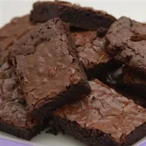

Absolutely Best Brownies

Delightfully Fudgy Brownies
These cake-like brownies are the most delicious, fudgy treats that I have ever eaten.
They are so moist and super quick and easy to make. For best results, use Dutch-processed cocoa.
For less cake-like brownies, use all-purpose flour instead of self-rising.
Ingredients
- 1 cup white sugar
- ½ cup butter, melted
- 2 large eggs
- ½ cup self-rising flour
- ⅓ cup unsweetened cocoa powder
- ¼ teaspoon salt
- 1 teaspoon vanilla extract
- ½ cup chopped walnuts (Optional)
Steps
- Preheat the oven to 350 degrees F (175 degrees C). Grease and flour an 8x8- or 9x9-inch baking pan.
- Beat together sugar and butter in a medium bowl.
Add eggs and mix well. Combine flour, cocoa, and salt; stir into sugar mixture.
Mix in vanilla, then stir in walnuts.
Spread evenly into the prepared pan.
- Bake in the preheated oven until edges are firm, 25 to 30 minutes. Cool before cutting into squares.